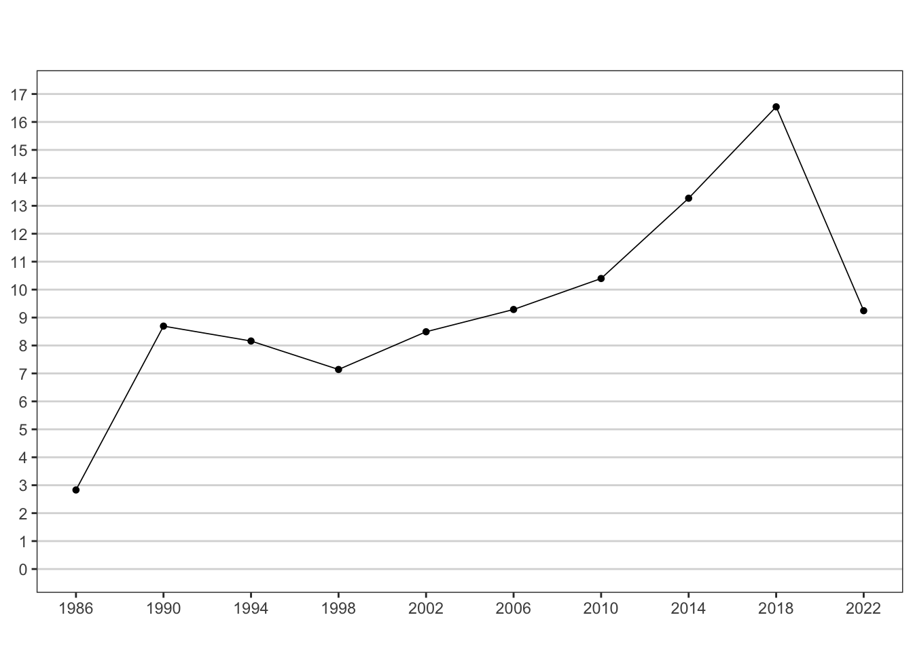

O efeito do fim das coligações nas eleições proporcionais na composição da Câmara dos Deputados eleita em 2022
https://orcid.org/0000-0003-2570-1578.
Professor da FGV/CPDOC, Rio de Janeiro, RJ, Brasil, e-mail: jaironicolau@gmail.com
RESUMO
As eleições de 2022 foram as primeiras, desde a democratização, em que os partidos foram proibidos de se coligarem para deputado federal e estadual. O artigo avalia o impacto dessa mudança na composição das bancadas eleitas para a Câmara dos Deputados. A primeira seção mostra as principais características do modelo de representação proporcional utilizado no Brasil. A seção seguinte faz um resumo das alterações promovidas pelas reformas eleitorais de 2017 e 2021. A terceira seção analisa a evolução de alguns indicadores da representação dos partidos, tomando os estados e o Distrito Federal como unidade de análise: o total de partidos que concorreu e elegeu deputados; a fragmentação partidária eleitoral e parlamentar. Todos os indicadores mostram que houve uma redução significativa do número de partidos representados e da fragmentação partidária nas eleições para a Câmara dos Deputados em 2022; essa redução é observada em todas as unidades da federação. O artigo mostra que o fim das coligações teve um papel decisivo para a reconfiguração do quadro partidário brasileiro.
Palavras-chave: eleições para Câmara dos Deputados brasileira, representação proporcional, reforma eleitoral
ABSTRACT
The 2022 elections were the first, since democratization, in which parties were prohibited from forming coalitions for Chamber of Deputies. The article assesses the impact of this change on the composition on the Chamber of Deputies. The first section shows the main characteristics of the proportional representation model used in Brazil. The following section summarizes the changes brought about by the electoral reforms of 2017 and 2021. The third section analyzes the evolution of some indicators of party representation, taking “party federation” as the unit of analysis; the number of parties that present candidates; the number of parties that elected deputies; electoral and parliamentary party fragmentation. All indicators show that there has been a significant reduction in the number of parties represented and in party fragmentation; this reduction is observed in all states. The article shows that the end of coalitions played a decisive role in the reconfiguration of the Brazilian party system.
Keywords: elections for the Brazilian Chamber of Deputies, proportional representation, electoral reform in Brazil
Durante pouco mais de três décadas (1986-2018) o sistema eleitoral utilizado nas eleições para a Câmara dos Deputados, Assembleias Legislativas e Câmaras Municipais no Brasil praticamente não foi alterado. Em que pese a utilização de uma mesma regra para a escolha de representantes, o sistema partidário foi se tornando mais fragmentado ao longo do período; na década de 2010 a Câmara dos Deputados brasileira tornou-se a mais fragmentada entre todas as democracias do mundo.
As eleições municipais de 2020 foram as primeiras desde a democratização em que os partidos foram proibidos de concorrem coligados nas eleições proporcionais. A mudança, aparentemente um pequeno detalhe técnico, teve forte impacto nas chances de os partidos elegerem representantes. O fim da coligação, acompanhado por outras mudanças na legislação eleitoral (a adoção da cláusula de desempenho e a possibilidade de uso da federação partidária) marcam o começo de um período com maiores restrições para a atividade das pequenas legendas e, consequentemente, para uma provável redução da fragmentação partidária no país.
Esse artigo avalia os efeitos das mudanças promovidas pelas reformas eleitorais 2017 e 2021 sobre o sistema partidário, com ênfase no total de partidos que disputa as eleições e conseguem eleger representantes. A primeira seção mostra as principais características do sistema de representação proporcional em vigor no Brasil até 2018. A segunda seção descreve as mudanças implementadas pelas duas reformas eleitorais. A terceira seção analisa as mudanças no número de partidos que concorrem e conseguem obter representação nas eleições para a Câmara dos Deputados de 2022. Como as eleições para deputado federal acontecem no âmbito dos estados, o artigo privilegia essa esfera para análise dos dados; para permitir uma comparação mais acurada, os gráficos comparam os dados de 2022 com o de seis eleições anteriores.
A representação proporcional no Brasil
Até 2018, deputados e vereados foram eleitos por um sistema eleitoral, que manteve as suas características fundamentais, que podem ser resumidas em quatro pontos.1
a) O uso do modelo de lista aberta. Os partidos apresentam uma lista de candidatos e os candidatos mais votados ocupam as cadeiras conquistadas pelos partidos; em versões de representação proporcional empregadas em outras democracias (a lista fechada e a lista flexível) a ordem dos candidatos é definida pelos partidos previamente às eleições.
b) A necessidade de obtenção de um patamar mínimo de votos para que um partido (ou coligação) possa participar da distribuição das cadeiras. Esse patamar é chamado de quociente eleitoral, que é obtido dividindo-se o total de votos válidos pelas cadeiras em disputa. Embora o quociente eleitoral varie de eleição para eleição, ele pode ser estimado em termos percentuais, dividindo 100% pelo número de cadeiras; por exemplo, em um distrito eleitoral de 8 cadeiras um partido (ou coligação) necessita obter 12,5% para participar da distribuição de cadeiras (100/8).
c) A permissão para que os partidos possam concorrer coligados. Dois ou mais partidos podem se coligar, situação em que seus votos são somados para fins de ultrapassar o quociente eleitoral.
d) As coligações entre os partidos não são reproduzidas em todos estados e municípios. Os diretórios estaduais (nas eleições para a Câmara dos Deputados e Assembleias Legislativas) e municipais (nas eleições para as Câmaras dos Vereadores) decidem se concorrerão sozinhos ou coligados.
A necessidade de obtenção de um mínimo de votos para participar da distribuição das cadeiras (b) e a possibilidade de concorrer coligado (c) têm efeitos diferenciados sobre a estratégia dos partidos. A primeira gera uma barreira (quociente eleitoral) que exclui os partidos da representação parlamentar – efeito que é mais acentuado nas circunscrições eleitorais que elegem um número reduzido de representantes. A segunda, aumenta as chances de representação, já que possibilita que partidos coligados agreguem seus votos para ultrapassar a barreira do quociente eleitoral.
Em uma coligação de dois ou mais partidos existe um elemento de aleatoriedade em relação a qual deles se beneficiará da votação de outros. Imagine, por exemplo, uma coligação entre dois partidos (A e B) que tenha elegido cinco deputados, e que o Partido A tenha contribuído com 80% de votos da coligação e o Partido B com 20%. Em um primeiro cenário podemos imaginar um resultado proporcional à votação, com o Partido A elegendo quatro cadeiras e o Partido B elegendo uma. Em um segundo cenário, o maior partido (A) se beneficiaria dos votos do menor (B) e elegeria os cinco candidatos. Por fim, em um terceiro cenário, o partido menor (B) se beneficiaria dos votos do maior e elegeria dois deputados.
Apesar do efeito aleatório das coligações sobre a representação partidária, diversos estudos mostraram que, na prática, os menores partidos foram os principais beneficiados pela regra.2 Isso acontecia porque em muitos estados (sobretudo os que têm bancadas de até 10 representantes na Câmara dos Deputados) os pequenos partidos conseguiam eleger representantes mesmo obtendo votação inferior ao quociente eleitoral. Um caso extremo é quando todos os representantes de um estado foram eleitos por diferentes legendas. Nas eleições para a Câmara dos Deputados realizadas entre 1994 e 2018, em 14 ocasiões a bancada de uma unidade da federação foi composta por um representante de cada partido.3
As coligações nas eleições proporcionais foram permitidas ao longo da República de 1946 (1950-62), mas proibidas durante a Ditadura Militar (1966-1982). A partir de 1986, elas voltaram a ser permitidas e passaram a ser amplamente utilizadas pelos partidos nas eleições para a Câmara dos Deputados, Assembleias Legislativas e Câmaras Municipais.
Um levantamento com dados das eleições para a Câmara dos Deputados em 2010 e 2014 mostra que em todas as unidades da federação o total de partidos que concorrem coligados sempre ultrapassa o de partidos que saem sozinhos. Em 2018, as coligações foram amplamente utilizadas, inclusive pelos maiores partidos: o PP fez aliança em 26 estados, o PT e o MDB em 24 estados e o PSDB nos 25 estados em que apresentou candidatos.4
Entre as democracias que utilizam a representação proporcional, são poucas as que permitem que partidos se coliguem; entre elas, destacam-se a Bélgica e a Finlândia.5 Mas há duas diferenças fundamentais quando comparamos esses dois países com o Brasil. A primeira delas é que a prática das coligações é incomum; a segunda é que as alianças têm âmbito nacional, ou seja, os partidos concorrem coligados em todos os distritos eleitorais. O fato de os partidos utilizarem tão pouco as coligações em outras democracias talvez explique o número reduzido de estudos sobre o tema na literatura internacional sobre sistemas eleitorais.6
A utilização das coligações eleitorais é uma dimensão fundamental para entender o sistema representativo brasileiro entre 1986 e 2018. Os partidos fizeram amplo uso desse recurso em todas as eleições e para todos os cargos proporcionais. Esse uso extensivo das coligações coloca o Brasil em um território singular quando comparado a outros países: não há outra democracia do mundo em que os partidos tenham se aliado tão frequentemente em eleições parlamentares.
As reformas do sistema eleitoral brasileiro: 2017 e 2021
Como vimos, os dados da década de 2010 mostram que as coligações passaram a ser uma prática universal nas eleições para a Câmara dos Deputados, sendo utilizada em todos os estados e por quase todos os partidos. Uma hipótese para explicar a generalização da prática das coligações é o aumento da fragmentação partidária no período. Em um ambiente de alta dispersão partidária, os líderes partidários têm maior incerteza em relação à capacidade de suas legendas ultrapassarem o quociente eleitoral; na dúvida, a melhor estratégia é se coligar, e assim, aumentar a probabilidade de ultrapassar o quociente eleitoral.
Em que pese as coligações terem sido amplamente utilizadas pelos partidos, a Câmara dos Deputados tomou uma decisão surpreendente: aprovou, em setembro de 2017, uma Emenda Constitucional que proibiu que os partidos se coliguem nas eleições proporcionais. A proibição passou a fazer parte do texto da Constituição que trata da autonomia dos partidos, e que passaria a ter a seguinte redação:
“É assegurada aos partidos políticos autonomia para definir sua estrutura interna e estabelecer regras sobre escolha, formação e duração de seus órgãos permanentes e provisórios e sobre sua organização e funcionamento e para adotar os critérios de escolha e o regime de suas coligações nas eleições majoritárias, vedada a sua celebração nas eleições proporcionais, sem obrigatoriedade de vinculação entre as candidaturas em âmbito nacional, estadual, distrital ou municipal, devendo seus estatutos estabelecer normas de disciplina e fidelidade partidária.” (Artigo 17, parágrafo 1).
O fim da coligação foi a medida mais restritiva à representação partidária aprovada pelo Congresso Nacional desde 1985. O que chama a atenção quando olhamos o resultado da votação da nova regra é a quase unanimidade com que ela foi aprovada. Todos os partidos, com exceção do PSOL, votaram majoritariamente a favor da proibição da coligação. O texto foi aprovado com o apoio de quase todos os deputados que compareceram à sessão: 384 votaram a favor, 16 votos contra e dois se abstiveram.7
A decisão da Câmara dos Deputados deixa três questões, que merecem pesquisas mais detalhadas no futuro. A primeira delas é por que proibir a coligação para cargos proporcionais, já que ela servia para reduzir a incerteza eleitoral e era amplamente utilizada pelos partidos? A segunda é qual é a razão de os pequenos partidos, que seriam prejudicados pela regra, terem votado favoravelmente à medida? (o esperado seria observarmos uma divisão: os maiores partidos favoráveis ao fim das coligações e os menores partidos contrários à medida). A última diz respeito à natureza legislativo da medida: se o fim da coligação poderia ser aprovado por uma mudança na legislação ordinária, qual é a razão de inseri-la no texto da Constituição?
As reformas eleitorais em países que utilizam a representação proporcional acontecem, sobretudo, nas seguintes situações: a fórmula eleitoral é modificada; o formato de escolha de candidatos de cada lista é alterado; o número de representantes eleitos por circunscrição eleitoral é modificado; há mudança nos patamares da cláusula de barreira. A reforma do sistema eleitoral, que passou a vigorar nas eleições para a Câmara dos Deputados do Brasil em 2022, é singular porque ela alterou um mecanismo (coligação) muito pouco usado em outras democracias.8
Além do fim da coligação, a Câmara dos Deputados aprovou, também em 2017, uma outra norma prejudicial aos pequenos partidos: a cláusula de 3%. A partir de 2030 os partidos terão que obter pelo menos 3% dos votos (com no mínimo 2% dos votos em nove unidades da federação) nas eleições para a Câmara dos Deputados para terem acesso aos recursos do Fundo Partidário e à propaganda gratuita no rádio e na televisão. O texto estabeleceu ainda uma regra de transição, com patamares crescentes para vigorar entre 2018 e 2026: 1,5% dos votos em 2018, 2% em 2022 e 2,5% em 2026.9
A cláusula de desempenho de 1,5% entrou em vigor em 2018, mas o fim das coligações passaria a vigorar somente nas eleições municipais de 2020. No pleito de 2018 concorrem 35 partidos; 21 deles ultrapassaram a cláusula de desempenho e 14 tiveram menos de 1,5% dos votos: PCdoB, PPL, Patriota, PRP, Rede, PCB, PSTU, PCO, PMN, PRTB, DC, PMB, PTC e PHS. Após as eleições, a Justiça Eleitoral aceitou que os partidos poderiam somar o percentual de votos que obtiveram no pleito de 2018 de modo a ultrapassarem o patamar mínimo; O PCdoB que incorporou o PPL e o Patriota que incorporou o PRP se beneficiaram dessa decisão. Com as incorporações, caiu para 10 o número de partidos que deixou de receber (entre 2019 e 202) os recursos do Fundo Partidário, e perderam o direito à propaganda gratuita no rádio e na televisão nas eleições de 2020 e 2022.10
A literatura sobre os efeitos dos sistemas eleitorais mostra que a magnitude (número de cadeiras em disputa) é um elemento determinante para a representação dos partidos: mantido constante outros fatores, quanto maior a magnitude, maior a probabilidade de eleger um representante.11 Para dar um exemplo: nas cidades brasileiras que elegem 9 vereadores um partido precisa obter pelo menos 11,1% dos votos; já nas que elegem 13 vereadores este patamar cai para 7,7%.
As eleições municipais de 2020 foram as primeiras em que os partidos concorreram para as Câmaras Municipais sem poderem se coligar. As Câmara Municipais têm bancadas que variam, segundo o número de moradores do município. A legislação estabelece 24 faixas populacionais e a respectiva bancada no legislativo municipal; as faixas variam de 9 vereadores (cidades até 15 mil habitantes) até 55 vereadores (cidades com mais de 8 milhões, que contempla apenas a São Paulo). A maioria das cidades brasileiras elege um número relativamente reduzido de vereadores. Em 2010, por exemplo, 4957 tinham uma população inferior a 50 mil habitantes; essas cidades elegem entre 9 e 13 vereadores.12 Nessas cidades com baixa magnitude, a expectativa é que o fim da coligação tenha diminuído significativamente o número de partidos representados.
Um estudo que comparou as eleições municipais de 2020 com a de 2016 mostra que o fim das coligações teve dois efeitos. O primeiro deles é que a média de partidos que apresentou candidatos caiu; a redução aconteceu em todas as faixas, sobretudo nas cidades que elegem entre 9 e 15 vereadores. Uma hipótese é que a nova regra já teria desestimulado alguns partidos de concorreram; sem a possibilidade de se aliarem a outras legendas acabaram desistindo de apresentar candidatos. O segundo efeito é a redução do número de partidos que conseguiram eleger representantes, o que aconteceu de maneira mais significativa nas cidades com bancadas menores nas Câmaras Municipais.13
Em agosto de 2021, a Câmara dos Deputados surpreendeu mais uma vez ao aprovar um Emenda Constitucional que acabaria com a proibição das coligações. A proposta foi aprovada por 347 votos a favor, 135 contra e três abstenções. As bancadas da maioria dos partidos se dividiram, e apenas seis partidos (PSD, PDT, NOVO, PSOL, Cidadania e PV) votaram majoritariamente contra o projeto.14 A proposta foi enviada ao Senado, mas o seu presidente, Rodrigo Pacheco (PSD-MG), não a colocou em votação a tempo de poder vigorar nas eleições do ano seguinte.
O debate que precedeu a votação do fim da coligação na Câmara dos Deputados , e a declaração de algumas lideranças partidários na imprensa mostram que a redução dos partidos representados nas Câmaras Municipais observada nas eleições de 2020, teria sido um fator determinante para a tentativa de aprovar a volta da coligação. Os dirigentes dos partidos teriam se dado conta de que as coligações reduziram, em um nível muito mais muito mais acentuado do que eles haviam antevisto, as chances de seus partidos elegerem parlamentares.
Sem o retorno das coligações e diante da entrada em vigor de um novo patamar da cláusula de desempenho (que passaria de 1,5% para 2%), a Câmara dos Deputados aprovou em 2021 duas medidas que favoreceram os pequenos partidos comparativamente às regras vigentes em 2020: a criação da federação partidária e a redução do patamar de votos para que um partido participe da distribuição de cadeiras nas eleições proporcionais.
A federação partidária é a possibilidade que dois ou mais partidos se aliem politicamente e passem a funcionar como um “único partido” durante a vigência da aliança, que deve durar pelo menos 4 anos. Partidos que participam da federação no período eleitoral (fazem alianças nas disputas para cargos majoritários e proporcionais) e pós-eleitoral (formam bancadas únicas no legislativo). Em maio de 2022, sete partidos juntaram-se em três diferentes federações: PSDB-Cidadania; PSOL-Rede; PT-PCdoB-PV. Portanto, para além de se coligarem nacionalmente nas eleições daquele ano, esses partidos devem ter ação conjunta no Congresso e nas Câmaras Municipais e deverão estar associados novamente nas eleições municipais de 2024.
A reforma de 2021 também reduziu o patamar de votos necessários para que um partido participe da distribuição de cadeiras. Desde 1945, quando a representação proporcional de lista foi utilizada pela primeira vez no Brasil, um partido precisava ultrapassar o quociente eleitoral para participar da distribuição de cadeiras. A partir de 2022 este patamar caiu para 80% do quociente eleitoral. Para dar um exemplo: em Rondônia, um partido precisava obter, pelo menos 12,5% dos votos para participar da distribuição de cadeiras; em 2022 este valor caiu para 10%.15
Em resumo, o novo sistema eleitoral brasileiro, que passou a vigorar a partir de 2022 tem as seguintes características:
a) a lista aberta;
b) a proibição de os partidos se coligarem nas eleições para deputado federal, deputado estadual e vereador;
c) a permissão para que dois ou mais partidos se unam em federação, o que os obriga a atuarem conjuntamente por quatro anos. Para fins eleitorais, a federação funciona como uma coligação reproduzida em todas as circunscrições eleitorais nas quais disputará a eleição;
d) exigência de que um partido ultrapasse um patamar mínimo de votos (80% do quociente eleitoral) para que possa participar da distribuição de cadeiras.
A alta fragmentação do sistema partidário brasileiro e o papel das coligações
O sistema partidário brasileiro conheceu um processo de crescente de dispersão partidária desde o retorno à democracia. A composição da Câmara dos Deputados é uma excelente amostra desse processo. A Figura 1 mostra a fragmentação da Câmara, medida pelo índice do número efetivo de partidos (NEP) – também conhecido pelo nome de seus criadores: índice de Laakso-Tagepera. Os índices foram calculados a partir do resultado das eleições realizadas entre 1986 e 2022.16
Três aspectos chamam a atenção na Figura 1. O primeiro deles é o crescimento da fragmentação partidária nas eleições de 1990. Como não houve nenhuma mudança nas regras eleitorais naquele ano, as causas do aumento da dispersão partidária decorrem da decisão dos dirigentes partidários e dos eleitores, entre os quais se destacam: a criação do PSDB (1988), a forte migração de políticos do PMDB para outras legendas a partir de 1988, e o desempenho eleitoral do PRN (partido do então presidente Fernando Collor) nas eleições de 1990.
O segundo aspecto é o aumento da fragmentação partidária a partir de 1998. Três fatores contribuíram para isso: o novo ciclo de criação de partidos ao longo da década de 2010, a ampliação do uso das coligações em eleições parlamentares, e o crescimento da bancada do PSL em 2018. Um último ponto a destacar Figura 1 é a forte redução do NEP nas eleições de 2022. Esse decréscimo da fragmentação está associado a mudanças na legislação eleitoral (analisadas na seção anterior) que pela primeira vez afetaram significativamente os pequenos partidos: a cláusula de desempenho e o fim das coligações.
Rein Taagepera e Matthew Shugart (1989) homenagearam o cientista político Maurice Duverger – um dos pioneiros dos estudos sobre sistemas eleitorais – nomeando dois efeitos dos sistemas eleitorais apontados por ele. O efeito mecânico de Duverger é a tendência presente em todos os sistemas eleitorais de favorecer os partidos mais votados (com bônus em cadeiras) e prejudicar os menos votados. As regras eleitorais também produzem efeitos no comportamento dos dirigentes partidários e dos eleitores. O efeito psicológico de Duverger opera, por exemplo, quando partido resolve não apresentar candidatos em um distrito eleitoral onde tem baixa probabilidade de eleger um deputado, ou quando, pelas mesmas razões o eleitor deixa de votar em sua primeira preferência para votar em um outro candidato com mais chances de se eleger (voto útil).
É plausível imaginar que a introdução da cláusula de desempenho e o fim das coligações nas eleições proporcionais tenham afetado a disposição dos partidos apresentarem candidatos à Câmara dos Deputados. Portanto, estaríamos diante de uma combinação de efeitos mecânicos (regras mais restritivas teriam impacto na atuação e diminuiriam a probabilidade de os pequenos partidos elegerem representantes) e efeitos psicológicos (diante das regras mais restritivas, partidos deixariam de concorrer).
Uma forma de dimensionar os efeitos da nova legislação sobre o comportamento dos partidos é comparar o total de legendas que disputa as eleições em 2022, com o número das que concorre em 2018. Um declínio significativo desse número pode ser visto como um indicador de que as novas regras teriam impactado a decisão dos dirigentes partidários (efeito psicológico de Duverger).
Trinta e cinco partidos disputaram as eleições de 2018. No ano seguinte, três deles foram incorporados a outras legendas e deixaram de existir por terem sido incorporados a outros (o PPL ao PCdoB, o PRP ao Patriota, o PHS ao Podemos). Com as federações criadas em 2022, quatro partidos (PV, PCdoB, PPS e Rede) deixaram de competir como uma entidade autônoma, já que passaram a fazer parte de uma aliança com outros partidos maiores. Desse modo, o número de partidos que disputou em 2022 cai para 28.
Como a decisão de concorrer ou não em uma eleição é tomada pelos diretórios em âmbito estadual, precisamos observar os dados na mesma esfera.17 A Figura 2 mostra o número de partidos que concorrem (linha verde) e elegem deputados federais (linha laranja) por unidade da federação nas sete eleições realizadas entre 1998 e 2022.
Podemos observar que o número de partidos que participa das eleições declina acentuadamente em todos os estados e no Distrito Federal em 2022. Em muitos estados o total de competidores volta ao nível de 1998, período em que a fragmentação partidária não era tão acentuada. Tanto a intensidade da queda quanto o fato de ela ter acontecido em todas as unidades da federação são elementos que indicam que nova legislação eleitoral provavelmente foi importante na decisão de os partidos não apresentarem candidatos.
Vale a pena relembrar como as regras ficaram mais restritivas para os pequenos partidos a partir de 2019. Dez legendas perderam recursos significativos (deixaram de receber dinheiro do Fundo Partidário, e competiram em 2020 e 2022 sem propaganda política no rádio e na televisão) e obtiveram um pequeno percentual do Fundo Eleitoral. Além disso, as eleições municipais de 2020 mostraram que o fim coligações reduziu o número de legendas nas Câmaras Municipais.
Na Figura 2 podemos também observar o efeito do sistema eleitoral sobre a representação dos partidos. A linha inferior de cada painel mostra que o número de partidos que elege representante também caiu em todos as unidades da federação em 2022. Em seis estados (Acre, Amapá, Mato Grosso, Piauí, Rio Grande do Norte e Rondônia) a bancada eleita é composta por apenas três partidos; há mais de 20 anos que isso não acontecia (a última vez que apenas três partidos elegeram representantes foi em 1998).
Figura 2: Total de partidos que concorre e elegem deputados federais por unidade da federação, 1998-2022.
Para além da simples contagem do total de partidos que concorre e elege representantes, vale a pena observar o grau de concentração/dispersão dos votos e das bancadas de cada estado. A Figura 3 mostra o número efetivo de partidos, com base nos votos e cadeiras entre 1998 e 2022.
Tanto a fragmentação eleitoral quanto a parlamentar caíram em todos estados e no Distrito Federal. A Figura 3 mostra que a evolução do NEP tem padrões muito diferenciados nos estados ao longo do período, mas em todas elas – com exceção do Rio de Janeiro – a dispersão eleitoral chegaria ao patamar máximo no pleito de 2018. Com relação à fragmentação parlamentar, observamos uma redução significativa em 2022, particularmente nos estados que elegem até 10 representantes: em 14 unidades da federação o NEP foi inferior a 5.0 (quatro anos, antes isso não havia acontecido em nenhum estado).
Figura 3: Número efetivo de partido (NEP) por unidade da federação. Votos e cadeiras. Câmara do Deputados (1998-2022).
Conclusão
Entre 1986 – quando foram realizadas as primeiras eleições para a Câmara dos Deputados realizadas após o fim do Regime Militar – e 2018, os partidos tiveram a opção de se coligarem nas eleições para cargos proporcionais. Amplo uso das coligações pelos partidos foi um dos fatores que mais contribuiu para tornar a o sistema partidário brasileiro o mais fragmentado do mundo. Além da possibilidade de coligação os menores partidos se beneficiaram de regras liberais que lhes garantiu acesso aos recursos do Fundo Partidário e à propaganda gratuita no rádio e televisão.
A partir de 2019, os partidos começam a ser afetados por um conjunto de reformas da legislação eleitoral. Pela primeira vez, algumas legendas deixaram de receber recursos do Fundo Partidário, e disputaram eleições (2020 e 2022) sem acesso à propaganda gratuita. A adoção da cláusula de desempenho e, sobretudo, o fim das coligações afetaram os pequenos partidos e foram determinantes para a redução da fragmentação partidária observada em 2022. O total de partidos que concorre e elege representantes teve uma queda significativa nas eleições de 2022; em muitas em unidades da federação o número de legendas voltou ao mesmo patamar dos anos 1990. O mesmo processo também é observado na dispersão dos votos e do poder parlamentar: a fragmentação caiu em todos os estados e no Distrito Federal.
A proibição das coligações foi a principal mudança no sistema de representação proporcional desde 1950. Os seus efeitos ainda devem ser sentidos nas próximas eleições, particularmente no comportamento dos dirigentes partidários. Independente desses efeitos futuros, a escala da redução da fragmentação observada em 2022 já coloca o Brasil como um caso singular entre as democracias que promoveram alterações na mecânica da representação proporcional
Bibliografia
Albuquerque, Felipe Munhoz de. 2017. «Uma análise das coligações proporcionais de 2010 e 2014». Revista Eletrônica de Ciência Política 8 (2). https://doi.org/10.5380/recp.v8i2.56299.
De Winter, Lieven. 2005. «Belgium: Empowering Voters or Party Elites?» Em, editado por Michael Gallagher e Lieven Mitchell, Paul, 417–32. Oxford: Oxford University Press.
Freitas, Andréia, e Lara Mesquita. 2010. «Coligações em Eleições Proporcionais: Quem ganha com isso?» Revista Liberdade e Cidadania, n.º 7: 1–21.
Herron, Eriks, Robertj Pekkanen, e Matthews Shugart, eds. 2017. The oxford handbook of electoral systems. Oxford: Oxford University Press.
Katz, Richard S. 2005. «Why are there so many (or so few) electoral reforms». Em, editado por Michael Gallagher e Paul Mitchell, 57–76. Oxford: Oxford University Press.
Krause, Silvana, Carlos Machado, e Luís Felipe Miguel, eds. 2017. Coligações e disputas eleitorais na Nova República: Aportes teórico-metodológicos, tendências e estudos de caso. São Paulo: Editora Unesp.
Laakso, Markku, e Rein Taagepera. 1979. «“Effective” Number of Parties: A Measure with Application to West Europe». Comparative Political Studies 12 (1): 3–27. https://doi.org/10.1177/001041407901200101.
Lijphart, Arend. 1994. Electoral systems and party systems: A study of twenty-seven democracies, 1945-1990. Oxford: Oxford University Press, USA.
Matheus, Thiago Alexandre Melo. 2021. «Estudo exploratório sobre o fim das coligações nas eleições municipais brasileiras de 2020». E-Legis - Revista Eletrônica do Programa de Pós-Graduação da Câmara dos Deputados, novembro, 358–84. https://doi.org/10.51206/elegis.v14i36.673.
Miguel, Luis Felipe, e Pedro Paulo Ferreira Bispo de Assis. 2016. «Coligações eleitorais e fragmentação das bancadas parlamentares no Brasil: simulações a partir das eleições de 2014». Revista de Sociologia e Política 24 (60): 29–46. https://doi.org/10.1590/1678-987316246003.
Nicolau, Jairo. 1996. Multipartidarismo e Democracia: Um Estudo Sobre O Sistema Partidário Brasileiro, 1985-94. Rio de Janeiro: FGV Editora.
———. 2017. Representantes de quem?: Os (des)caminhos do seu voto da urna à Câmara dos Deputados. 1ª edição. Rio de Janeiro, RJ: Zahar.
Passos Jr., José Carlos. 2023. «Reformas eleitorais no Brasil (2015-2021)». Tese de doutorado, Rio de Janeiro.
Raunio, Tapio. 2005. «Finland: One Hundred Years of Quietude». Em, editado por Paul Mitchell e Michael Gallagher, 473–89. Oxford: Oxford University Press.
Renwick, Alan. 2011. «Electoral Reform in Europe Since 1945». West European Politics 34 (3): 456–77. https://doi.org/10.1080/01402382.2011.555975.
Stamm, Cristiano, Jefferson Andronio Ramundo Staduto, Jandir Ferrera de Lima, e Yonissa Marmitt Wadi. 2013. «A população urbana e a difusão das cidades de porte médio no Brasil». Interações (Campo Grande) 14 (2): 251–65. https://doi.org/10.1590/S1518-70122013000200011.
Taagepera, Rein, e Matthew S. Shugart. 1989. Seats and votes: The effects and determinants of electoral systems. Yale University Press. http://www.getcited.org/pub/102708686.
Notas de rodapé
Duas outras mudanças dos sistemas eleitorais foram: a partir de 1998, o fim da inclusão dos votos em branco no cálculo do quociente eleitoral, medida que beneficiou os menores partidos; b) a exigência de um patamar mínimo de votos para que um candidato a deputado ou vereador possa ser eleito: 10% de votos do quociente eleitoral em 2016, 2018 e 2020; 10% na primeira rodada de divisão e 20% na distribuição das sobras, a partir de 2022.↩︎
Estudos que mostram como as coligações contribuíram para aumentar a fragmentação parlamentar no Brasil: Nicolau (1996); Freitas e Mesquita (2010); Miguel e Assis (2016); Nicolau (2017);Krause, Machado, e Miguel (2017).↩︎
As unidades da federação e os anos em que todos os deputados foram eleitos por partidos diferentes: Amapá (2014 e 2018), Distrito Federal (2014 e 2018), Mato Grosso (1994), Rio Grande do Norte (2014, 2018), Rondônia (2018), Roraima (2014, 2018) e Sergipe (2014, 2018), Alagoas (2014, 2018).↩︎
Dados de 2010 e 2014: Albuquerque (2017); dados de 2018: Nicolau (2017), pp. 54.↩︎
Finlândia, ver: Raunio (2005); Bélgica, ver: De Winter (2005).↩︎
O termo usado pelos estudiosos dos sistemas eleitorais para coligações é apparentement (palavra de origem francesa que significa aparentado, conectado). No Oxford Handbook of Electoral Systems (Herron, Pekkanen, e Shugart 2017) a palavra aparece apenas três vezes.↩︎
Sobre as reformas eleitorais em sistema proporcionais: Katz (2005); Renwick (2011).↩︎
Em 2030, um partido poderá, alternativamente, ter acesso aos recursos do Fundo Partidário e à propaganda gratuita se eleger 15 deputados em 9 estados diferentes. O número de deputados federais eleitos para que um partido possa prescindir do percentual mínimo de votos é o seguinte: 2018 (9 deputados), 2022 (11 deputados) e 2022 (15 deputados).↩︎
O PHS foi incorporado pelo Podemos em setembro de 2019.↩︎
Para todas as faixas populacionais que definem o número de vereadores das cidades, ver: “Como é definido o número de vereadores por município”. Os dados da população de 2010: Stamm et al. (2013).↩︎
Os dados estão apresentados em:Matheus (2021), pp.366-68. Ver também: “Fim das coligações reduz número de partidos nas Câmaras em 73% das cidades”.↩︎
Ultrapassar em votos o quociente eleitoral continua sendo condição suficiente para eleger um representante, mas ultrapassar os 80% do quociente é apenas condição necessária para disputar uma cadeira.↩︎
Uma instância nacional deliberação (diretório, executiva) pode ser o fórum de deliberação a respeito se um partido concorrerá ou não em um estado. Para fins do meu argumento esse aspecto não é relevante. Importa apenas saber se o partido concorreu ou não.↩︎